Large shrubs or small trees, up to 5 m tall.
5 ಮೀ ಎತ್ತರದವರೆಗಿನ ದೊಡ್ಡ ಗಾತ್ರದ ಪೊದೆಗಳು ಅಥವಾ ಸಣ್ಣ ಗಾತ್ರದ ಮರಗಳು.
Large shrubs or small trees, up to 5 m tall.
பெரிய குத்துச்செடி அல்லது சிறிய மரம் 5 மீ. உயரம் வரை வளரக்கூடியது.
Bark smooth.
ತೊಗಟೆ ನಯವಾಗಿರುತ್ತದೆ.
Bark smooth.
மரத்தின் பட்டை வழுவழுப்பானது.
Branchlets subterete to compressed, glabrous.
ಎಳೆಯ ಕಿರುಕೊಂಬೆಗಳು ಉಪ-ದುಂಡಾಗಿರುವುದರಿಂದ ಸಂಕುಚಿತವಾದ ಮಾದರಿಯವರೆಗಿನ ಆಕಾರ ಹೊಂದಿರುತ್ತವೆ ಹಾಗೂ ರೋಮರಹಿತವಾಗಿರುತ್ತವೆ.
Branchlets subterete to compressed, glabrous.
சிறியநுனிக்கிளைகள் குறுக்குவெட்டுத் தோற்றத்தில் சிறிது வளையமானது முதல் தட்டையானது, உரோமங்களற்றது.
Leaves simple, opposite, decussate; stipules linear - subulate with broad base to 0.9 cm long; petiole 0.4-1.2 cm long, glabrous, planoconvex in cross section, sometimes canaliculate due to folding of its margin; lamina 6-16 x 2-6 cm, variable in shape, narrow elliptic to elliptic or oblanceolate to narrow-obovate, apex acuminate, base cuneate to attenuate, margin entire, chartaceous, glabrous, black when dry; midrib flat above; secondary_nerves 6-12 pairs; tertiary_nerves slender broadly reticulate to reticulo-percurrent.
ಎಲೆಗಳು ಸರಳವಾಗಿದ್ದು ಕತ್ತರಿಯಾಕಾರದ ಅಭಿಮುಖ ಜೋಡನಾ ವ್ಯವಸ್ಥೆಯಲ್ಲಿರುತ್ತವೆ; ಕಾವಿನೆಲೆಗಳು ವಿಶಾಲವಾದ ಬುಡವುಳ್ಳ ರೇಖಾತ್ಮಕ-ದಬ್ಬಳದ ಆಕಾರದಲ್ಲಿದ್ದು 0.9 ಸೆಂ.ಮೀ. ಉದ್ದ ಹೊಂದಿರುತ್ತವೆ;ತೊಟ್ಟು 0.4 - 1.2 ಸೆಂ.ಮೀ.ವರೆಗಿನ ಉದ್ದವಿದ್ದು, ರೋಮರಹಿತವಾಗಿರುತ್ತದೆ, ಅಡ್ಡ ಸೀಳಿದಾಗ ಸಪಾಟ ಪೀನ ಮಧ್ಯದ ಆಕಾರ ಹೊಂದಿರುತ್ತದೆ,ಕೆಲವುವೇಳೆತೊಟ್ಟಿನ ಅಂಚು ಮಡಿಚುವ ಕಾರಣದಿಂದ ಕಾಲುವೆಗೆರೆಯಯನ್ನು ಹೊಂದಿರುತ್ತದೆ;ಪತ್ರಗಳು 6-16 X 2 –6 ಸೆಂ.ಮೀ. ಗಾತ್ರ ಹೊಂದಿದ್ದುಆಕಾರದಲ್ಲಿ ವೈವಿಧ್ಯತೆ ಹೊಂದಿರುತ್ತವೆ,ಸಂಕುಚಿತ ಅಂಡವೃತ್ತದಿಂದ ಅಂಡವೃತ್ತ, ಅಥವಾ ಬುಗುರಿ-ಭರ್ಜಿಯಿಂದ ಸಂಕುಚಿತ ಬುಗುರಿಯವರೆಗಿನ ಆಕಾರ ಹೊಂದಿದ್ದು, ಕ್ರಮೇಣ ಚೂಪಾಗುವ ತುದಿ, ಬೆಣೆಯಾಕಾರದಿಂದ ಒಳಬಾಗಿದ ಮಾದರಿವರೆಗಿನ ಬುಡ, ನಯವಾದ ಅಂಚು, ಕಾಗದವನ್ನೋಲುವ ಮೇಲ್ಮೈ ಹೊಂದಿದ್ದು ರೋಮರಹಿತವಾಗಿರುತ್ತವೆ ಮತ್ತು ಒಣಗಿದಾಗ ಕಪ್ಪಾಗಿರುತ್ತವೆ; ಮಧ್ಯನಾಳ ಪತ್ರದ ಮೇಲ್ಭಾಗದಲ್ಲಿ ಚಪ್ಪಟೆಯಾಗಿರುತ್ತದೆ;ಎರಡನೇ ದರ್ಜೆಯ ನಾಳಗಳು ಅಂದಾಜು6 ರಿಂದ 12 ಜೋಡಿಗಳಿರುತ್ತವೆ; ಮೂರನೇ ದರ್ಜೆಯ ನಾಳಗಳು ತೆಳುವಾಗಿದ್ದು ವಿಶಾಲ ಜಾಲಬಂಧ ನಾಳ ವಿನ್ಯಾಸದಿಂದ ಜಾಲಬಂಧ ನಾಳ ವಿನ್ಯಾಸದಲ್ಲಿದ್ದು ಎಲೆಯ ದಿಂಡಿಗೆ ಅಡ್ಡವಾಗಿ ಕೂಡುವವರೆಗಿನ ಮಾದರಿಯಲ್ಲಿರುತ್ತವೆ.
Leaves simple, opposite, decussate; stipules linear - subulate with broad base to 0.9 cm long; petiole 0.4-1.2 cm long, glabrous, planoconvex in cross section, sometimes canaliculate due to folding of its margin; lamina 6-16 x 2-6 cm, variable in shape, narrow elliptic to elliptic or oblanceolate to narrow-obovate, apex acuminate, base cuneate to attenuate, margin entire, chartaceous, glabrous, black when dry; midrib flat above; secondary_nerves 6-12 pairs; tertiary_nerves slender broadly reticulate to reticulo-percurrent.
இலைகள் தனித்தவை, எதிரடுக்கமானவை, குறுக்குமறுக்கானவை; இலையடிச்செதில் கோட்டு வடிவானது-மெல்லிய நீண்ட கூர்மையான நுனியுடையது மற்றும் அகன்ற தளத்தையுடையது, 0.9 செ.மீ. நீளமானது; இலைக்காம்பு 0.4-1.2 செ.மீ. நீளமானது, உரோமங்களற்றது, குறுக்குவெட்டுத் தோற்றத்தில் பிளேனோகான்வக்ஸ், சிலசமயங்களில் கேனாலிகுலேட்; இலை அலகு 6-16 X 2-6 செ.மீ., வெவ்வேறு வடிவுடையது, குறுகிய நீள்வட்ட முதல் நீள்வட்ட வடிவானது அல்லது தலைகீழ் ஈட்டி வடிவானது முதல் குறுகிய-தலைகீழ் முட்டை வடிவானது, அலகின் நுனி அதிக்கூரியது, அலகின் தளம் ஆப்பு வடிவானது முதல் அட்டனுவேட், அலகின் விளிம்பு முழுமையானது, சார்ட்டோசியஸ், உரோமங்களற்றது, உலரும் போது கருப்பு நிறமானது; மையநரம்பு மேற்புறத்தில் அலகின் பரப்பிற்கு சமமானது; இரண்டாம் நிலை நரம்புகள் 6-12 ஜோடிகள்; மூன்றாம் நிலை நரம்புகள் மெல்லியவை அகன்ற வலைப்பின்னல் முதல் வலைப்பின்னல்-பெர்க்கரண்ட் போன்றவை.
Inflorescence terminal panicled cyme; flowers white.
ಪುಷ್ಪಮಂಜರಿಗಳು ತುದಿಯಲ್ಲಿನ ಪುನರಾವೃತ್ತಿಯಾಗಿ ಕವಲೊಡೆಯುವ ಮಧ್ಯಾರಂಭಿ ಮಾದರಿಯವು; ಹೂಗಳು ಬಿಳಿ ಬಣ್ಣದವು.
Inflorescence terminal panicled cyme; flowers white.
மஞ்சரி தண்டின் நுனியில் காணப்படும் பேனிக்கிள் சைம் வகை மஞ்சரி; மலர்கள் வெள்ளை நிறமானது.
Berry 0.7 cm across, nearly globose; seeds two.
ಬೆರ್ರಿಗಳು, 0.7 ಸೆಂ.ಮೀ. ಅಡ್ಡಗಲತೆ ಹೊಂದಿದ್ದು ಬಹುಮಟ್ಟಿಗೆ ಗೋಳದ ಆಕಾರ ಹೊಂದಿರುತ್ತವೆ; ಬೀಜಗಳ ಸಂಖ್ಯೆ 2.
Berry 0.7 cm across, nearly globose; seeds two.
முழுச்சதைகனி (பெர்ரி) 0.7 செ.மீ. குறுக்களவுடையது, கிட்டதட்ட கோள வடிவமானது; விதைகள் 2.
 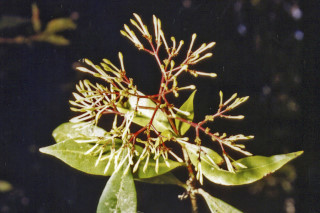
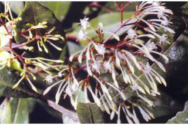
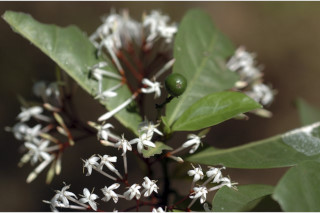
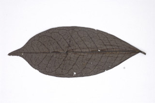
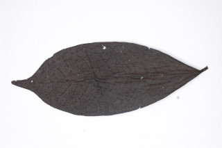
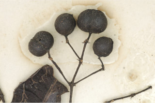
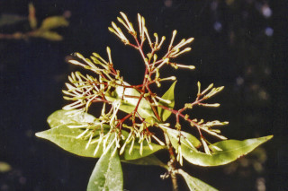
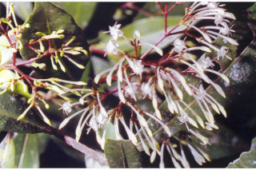
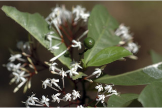
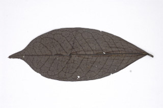
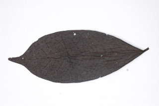
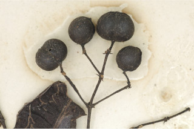